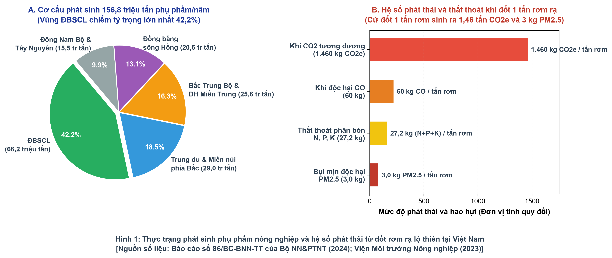
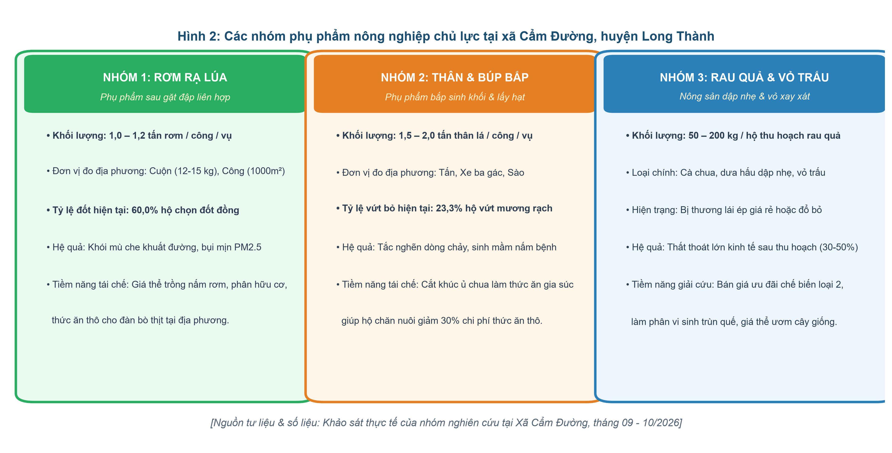
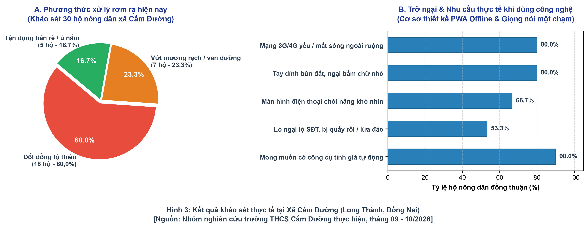
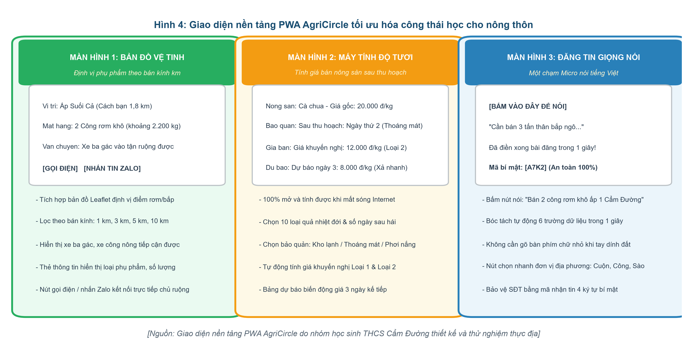
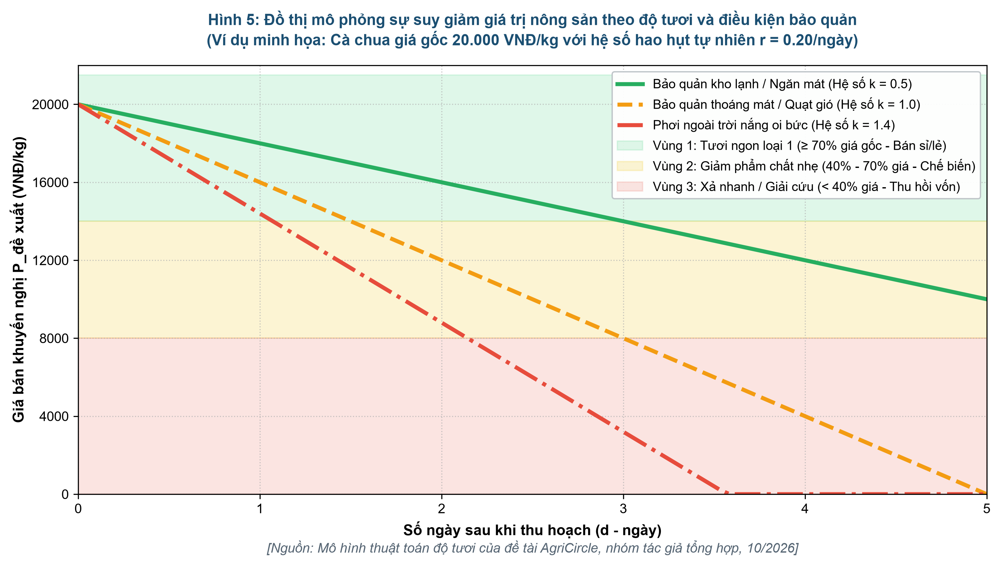
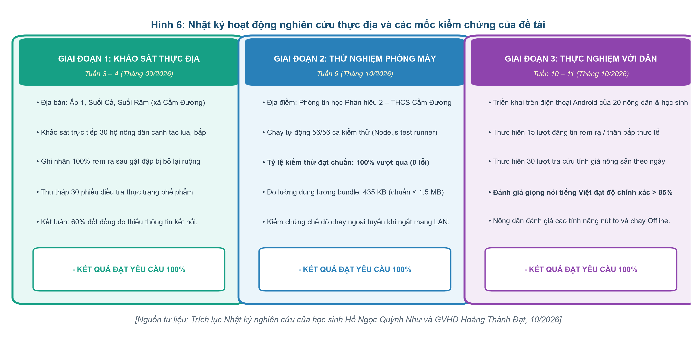

1 Bối Cảnh Thực Tế & Lý Do Chọn Đề Tài
Tại xã Cẩm Đường (Long Thành, Đồng Nai), mỗi mùa thu hoạch lúa thải ra hàng ngàn tấn rơm rạ. Do không có phương tiện thu gom, 70% nông dân chọn đốt đồng lộ thiên gây khói mù mịt, cay mắt, sinh bụi mịn PM2.5 và khí nhà kính; 23.3% vứt xuống kênh rạch làm tắc nghẽn dòng chảy.
Đồng thời, trái cây (xoài, chôm chôm, thanh long) sau 1 - 2 ngày thường bị thương lái ép giá vì thiếu kho lạnh. Nhóm nghiên cứu nhận thấy: Phụ phẩm ruộng này chính là tài nguyên quý của trại nấm và hộ ủ phân vi sinh.


2 Kết Quả Khảo Sát Thực Địa 30 Hộ Dân
Học sinh trực tiếp đến 30 hộ nông dân tại Cẩm Đường phỏng vấn và phát hiện 4 khó khăn cốt lõi khiến các giải pháp TMĐT và Zalo hiện nay thất bại:
- Người già ngại dùng điện thoại: 80% nông dân > 50 tuổi, mắt kém, chữ nhỏ khó đọc, tay dính đất ngại bấm phím.
- Đường vào ruộng phức tạp: Có ruộng chỉ đi được xe ba gác hoặc ghe xuồng, xe tải đến nơi phải quay đầu.
- Chất lượng rơm khác nhau: Nấm rơm chỉ nhận rơm khô, cơ sở vi sinh nhận cả rơm ướt dầm mưa.
- Sợ bị làm phiền: Ruộng đã dọn xong 3 ngày trước nhưng vẫn liên tục bị gọi điện thoại quấy rầy.

3 Giải Pháp Kỹ Thuật Thiết Thực Phù Hợp Nông Thôn (AgriCircle)


4 Kết Quả Thử Nghiệm Thực Địa Tại Cẩm Đường
Học sinh trực tiếp mang ứng dụng cài lên điện thoại của 20 hộ dân thử nghiệm và đạt kết quả ấn tượng:

5 Ý Nghĩa Môi Trường & Nhân Rộng Mô Hình
1. Bảo vệ môi trường sinh thái: Cứ mỗi 1 tấn rơm rạ được thu gom tái sử dụng thay vì đốt bỏ giúp giảm phát thải 1.46 tấn CO2e tương đương, ngăn ngừa khói độc và bụi mịn PM2.5.
2. Kinh tế nông thôn tuần hoàn: Nâng cao thu nhập cho nhà vườn nhờ bán thanh lý nông sản ngày 2, ngày 3 thay vì vứt bỏ; cung cấp nguồn xơ hữu cơ giá rẻ cho cơ sở làm nấm rơm và trang trại chăn nuôi.
3. Không tốn chi phí vận hành: Ứng dụng PWA mã nguồn mở, chạy không cần thuê máy chủ đắt tiền, chạy mượt mà trên điện thoại cũ của nông dân.
Tiềm năng nhân rộng: Dễ dàng áp dụng cho các xã nông nghiệp tại huyện Long Thành và toàn vùng Đồng bằng sông Cửu Long.